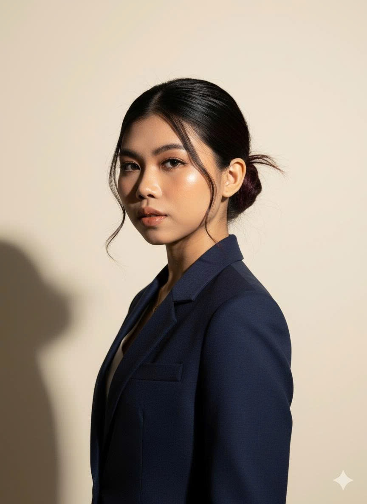

Finance professional with hands-on experience in investment research, M&A strategy, and financial modeling — now focused on how capital, deployed with discipline, can produce measurable, inclusive development outcomes.
What draws me most to this field is the opportunity to connect capital with inclusive, measurable development outcomes — a conviction shaped less in the classroom than on the ground, across three moments over the past year.
Supporting the Arab Business Council as secretary during the announcement of Hanoi's 100-year master plan gave me a close view of long-term development thinking — and how capital decisions made today shape a city for a century.
Site visits to industrial and hydropower projects strengthened my interest in how infrastructure, energy, and investment decisions shape local livelihoods and regional growth — not in the abstract, but on the ground.
Time in mountainous communities — meeting artisans and children whose lives reflect both the challenges and the potential of inclusive development — showed me how local communities turn traditional products into marketable goods that preserve culture while creating real economic value.
That experience made me want to help secure the right capital and support systems so these communities can scale sustainably — which is why I am drawn to joining a global impact fund.
Led a 5-person team developing financial models and operational strategies to improve the financial resilience of a furniture brand during COVID-19. Awarded for the proposed business partnership and financial recovery strategy.
Led a 4-member team researching global salary data to identify high-income industries and geographic trends. Used Bloomberg, Python, and R for data collection; presented findings via Power BI and PowerPoint.